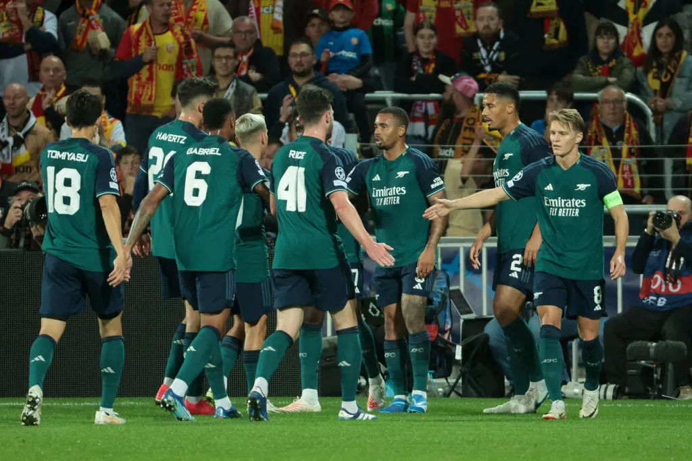
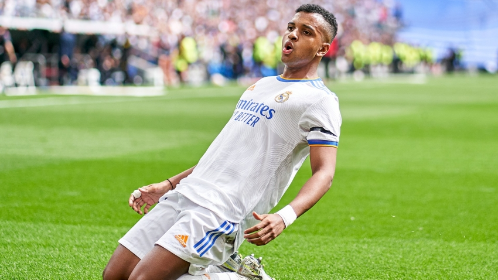

egyptian league
Al-Ahly leads with full marks
The previous five rounds witnessed Al-Ahly team achieving the full mark by winning all the matches it played without any loss or draw.
Al-Ahly leads the league standings, with 12 points, after playing 4 matches, all of which it won. Its players scored 8 goals and conceded only two goals.

Al Ahly thrash Al-Ittihad’s Euro stars to set up Fluminense CWC semi. Urawa reds to face Man City
18th December 2023
December 17 – African champions Al Ahly from Egypt eliminated hosts Al-Ittihad from the Club World Cup with a resounding 3-1 win to set up a semi-final against Brazil’s Fluminense. Japan’s Urawa Red Diamonds complete the last-four line-up and will face Manchester City.
All the firepower and experience of Karim Benzema, Fabinho and N’golo Kante was not enough to steer Al-Ittihad past Al Ahly of Egypt.
They had breezed past Auckland 3-0 in the first round, but were on the wrong end of a two-goal defeat against the Egyptians to bow out of the tournament on home soil, the first FIFA competition in Saudi Arabia since the 1997 Confederations Cup.
After a balanced opening first 20 minutes, Ali Maaloul converted a penalty for the visitors, 1-0. Al Ahly enjoyed the upper hand with Kante providing attacking impetus for Al-Ittihad at times. Benzema had a meek attempt saved in the 38th minute and turned anti-hero on the stroke of half-time when Al Ahly goalkeeper Mohamed El Shenawy denied his penalty kick.
The Saudi club returned from the dressing room on the front foot and Faisal Al Ghamdi saw his attempt ricochet off the woodwork, but it was Al Ahly who found the back of the net twice in the space of three minutes to decide the match.
In the 59th minute, Hussein El Shahat curled the ball beyond the Al-Ittihad goalkeeper with great precision before Eman Ashour got Al Ahly’s third.
It was a well deserved win for the Africans after demonstrating greater quality and tenacity throughout the match. The home fans left the stadium in droves before Anthony Modeste was sent off. In injury time, Benzema, peripheral throughout the 90 minutes, pulled back a consolation goal.
In Friday’s other second-round match, Urawa Reds of Japan defeated ten-man Leon of Mexico 1-0 following a second-half strike from Alex Schalk.
The Asian champions will meet Champions League winner Manchester City for a place in the final on Tuesday. Al Ahly face Fluminense of Brazil on Monday in the other semi-final.
Skorza: Al Ahly are different to Manchester City
December 20, 2023
Urawa Red Diamonds coach Maciej Skorza said that his side’s third place play-off against Al Ahly will be entirely different to their semi-final loss to Manchester City.
The Japanese side were dismantled 3-0 in their semi-final against the European champions, with Mateo Kovacic and Bernardo Silva each getting their names on the scoresheet to book a place in the final for Pep Guardiola’s men.
“We played against the best team in the world,” Skorza said in his press conference. “We expected them to play well and have more of the ball, and we weren’t good enough on the break.
“Manchester City created a lot of chances and reached our goal on several occasions. The Al Ahly game will be a tough one and we have to prepare well to face them.
“Al Ahly are a very different team to Manchester City, today we found a lot of difficulty in breaking them down, the Al Ahly game will be a different encounter.
“The experience you get from playing teams like these is very important, because they can punish you really easily, we need to review the mistakes we committed in tonight’s game to prepare for the game [against Al Ahly].”
Al Ahly are set to face Urawa Red Diamonds on Friday at 4:30pm Cairo Local Time.
Preview: Ahly in quest for a fourth bronze medal in FIFA Club World Cup
, Thursday 21 Dec 2023
Egyptian giants Ahly are preparing for a crucial showdown against Asian champions Urawa Reds of Japan in the third-place decider of the 2023 FIFA Club World Cup on Friday as the Red Devils seek the bronze medal for the fourth time in the club’s history.
The African champions boast an impressive history in the prestigious tournament, having clinched third place on three previous occasions (2006, 2020, and 2021).
However, they have yet to secure a higher standing in their ninth appearance.
This marks the sixth time that the Red Devils have fallen short of advancing to the finals at this stage of the tournament.
Ahly kicked off the competition in fine form, securing a 3-1 victory over hosts Ittihad Jeddah in the quarterfinals.
However, they stumbled in the semis, suffering a 2-0 defeat at the hands of Fluminense from Brazil.
Urawa Reds started their campaign in the World competition with a 3-0 loss to UEFA Champions League winners Manchester City in the semifinals.
Marcel Koller, Ahly's Swiss coach, expressed his disappointment during the post-match news conference against Fluminense, highlighting the team's struggle to convert clear goalscoring chances.
"This problem of missing clear goalscoring opportunities against Fluminense is unfortunate," lamented Koller.
"It has been a recurring issue in the domestic league, and we need to find a solution for it."
The Egyptian champions will play the game with all their top players, except French striker Anthony Modeste, who is serving a two-match ban following his red card in the quarterfinals against Ittihad Jeddah earlier this week.
Ahly's mission will not be easy as they face a disciplined and well-organized Japanese side.
Despite the anticipated loss to Manchester City, Urawa Reds Diamond demonstrated some resilience against the Premier League and Champions League champions in the competition’s semis on Tuesday.
"The result against Manchester City was disappointing," coach Atsuki Ito told Urawa Reds Diamond official website.
"I aim for 3rd place in the world, and it's also the end of this season.
"For all the fans and supporters who have travelled far and wide, and for all the people who support us in Japan, I want to win and finish with a smile on my face," he concluded.
premier league
English Premier League table 2023-2024: Liverpool and City draw, Tottenham loses, and Arsenal and United win.
Arsenal took advantage of the draw between Manchester City and Liverpool at the Etihad Stadium in the best possible way when they beat Brentford 1-0 through Kai Havertz in the 89th minute of the match, to sit at the top of the English Premier League standings.
While Tottenham lost its position to Aston Villa, after it was defeated by the latter by two goals to one, while Manchester United won 3-0 over Everton.
urgen Klopp names Premier League star as his favourite non-Liverpool player
Klopp has picked out a West Ham star as his favourite non-Liverpool player
The Reds thumped West Ham 5-1 on Wednesday night to book their place in the Carabao Cup semi-finals
Klopp also spoke about upcoming semi-final opponents Fulham
Jurgen Klopp has chosen West Ham star Jarrod Bowen as his favourite non-Liverpool player in the Premier League.
Bowen has been in electric form for the Hammers so far this season, scoring 12 goals in all competitions having successfully transitioned into a centre forward role.
The 27-year-old bagged a stunning goal with West Ham's only shot on target at Anfield on Wednesday in a thumping 5-1 defeat in the Carabao Cup quarter-finals.
Speaking after the game to the press, Klopp was keen to praise Bowen, hailing the England international's development in recent times. Bowen had previously been tentatively linked with a move to Liverpool, but committed his long-term future to West Ham by signing a seven-year deal at London Stadium.
Klopp said: "In quarter-finals, everybody can smell the chance to go through. In a very busy period, finding a lineup which can go and go and go because West Ham is a physically really strong team, David [Moyes] is doing an incredible job, I have to say.
"They are good again, through in Europe, it's really impressive. Injuries issues as well. Playing without Antonio, and Bowen steps up in that position.
"[He is] probably my favourite player besides all my players I have to say. It's great what he is doing and how he has developed."
Klopp also took the time to preview his club's next game in the Carabao Cup, with the Reds set to face Fulham in a two-legged semi-final.
He added: "It looks like it will be two spectacular games - the last one was pretty spectacular. We spoke about that before the game with David as well, Fulham is extremely well set up, which we felt here, which then West Ham felt as well a few days later.
"They are really strong, to be honest, really good team and they want to go to Wembley as well, so we will feel that."
Chelsea could hand Romeo Lavia debut as 'annoyed' Mauricio Pochettino issues squad warning
Blues boss has warned that Chelsea are not 'a charity' amid frustrations with returning stars unhappy over playing time
Mauricio Pochettino says Romeo Lavia could make his Chelsea debut against Wolves on Sunday but warned his returning injured players that they will be phased in very slowly.
The Argentine was keen to send a message directly to his Blues squad that he will only pick players who are fully fit and in good form.
Lavia, 19, has not played a competitive match for almost seven months now and has yet to make his Chelsea debut since a £53million summer transfer from Southampton.
Pochettino confirmed his midfielder's availability after he trained in full at Cobham this week, albeit with a warning to the wider squad.
“Lavia is in a similar position to [Christopher] Nkunku," he said. "He arrived and never made his debut. After six months, maybe tomorrow he will be involved, maybe.
"He is with the team and doing well but he still needs time to get his best form.
"They are all desperate to make debuts and we are pushing, but I need to be clear that we cannot make the mistake, they can be involved, but in which form, at what level?
"It is easy to say I want to play but we are competing, and it is serious the competition but, after six months, Nkunku and him need to know they need to train really hard every day, or double the players who are fit, to make an impact when they go to the pitch."
Noni Madueke and Lesley Ugochukwu are also back to full fitness for Chelsea and Nkunku made his own long-awaited debut in the midweek Carabao Cup penalty shootout win over Newcastle.

Arsenal star's shock move to bitter London rivals is 'tempting' - with fans likely to be split: report
Arsenal manager Mikel Arteta is having to deal with one of his players wanting to move across the capital this January
Arsenal are facing mutiny from one of their stars, who has set his sights on a move to a London rival.
That's the incredible claim being made, as the Gunners head into a weekend top-of-the-table clash against Liverpool. Things have been going well for Mikel Arteta's side this season, with plenty of competition for places among a big squad – and there seems to be a desire from the Basque boss to improve his options in January.
But for that to happen, there must be sales, with Arsenal close to their FFP limit. Now, one star is apparently keen on a move… though the Gunners won't be keen on who to.
According to sports writer Paul Brown, Aaron Ramsdale would like a move to Chelsea, calling the idea, "pretty tempting" when citing interest from the Blues in the England international.
talkSPORT has linked Ramsdale with a move to west London following David Raya's ascension to the No.1 spot in Arteta's thinking. Both Brown and talkSPORT, however, claim that a January move would be difficult for Arsenal to sanction.
Regardless of whether Arteta wants his No.2 keeper to leave, fans are likely to be polarised over the potential of the transfer.
Ramsdale isn't getting any game time for the Gunners, despite Arteta previously suggesting he could rotate his two custodians. While few fans would begrudge a move for the keeper, going across London to strengthen a bitter rival would probably upset some.
Alternately, Chelsea are off the pace in the league this season and any move for Ramsdale could total over £50 million, allowing Arteta to strengthen elsewhere in his side.
Ramsdale is worth €28m, according to Transfermarkt.
The five Man City players who could leave in January
After an underwhelming few weeks, Man City only sit fourth in the Premier League.
To remedy the situation, the Cityzens could dip into the market to bring in fresh faces in January. But there won't only be movement on the incoming front. Several big-name players are finding game time hard to come by under Pep Guardiola and could head for the exit.
Kalvin Phillips is the most obvious candidate to leave. Indeed, despite Guardiola recently asserting that he hopes the England international will stay, transfer expert Fabrizio Romano is certain that Phillips will depart, having spurned a move in the summer in a bid to fight for a place in the side.
Phillips has been heavily linked with the likes of Juventus and Newcastle United, while Bayern Munich could also look to the 28-year-old in their ongoing search for a defensive midfielder. Phillips joined City from Leeds in 2022 for almost €50 million but has thus far only made 31 appearances.
Zack Steffen
Once the great goalkeeping hope of the United States Men's National Team, Zack Steffen's move to Man City turned into a bit of a nightmare. Despite doing well on loan at Fortuna Dusseldorf at one point, Steffen's form has been on a steady decline since leaving Major League Soccer.
Relegated to third choice at City, Steffen will look to depart in 2024, but it may be hard to find any takers for him in January as the American is currently nursing a knee injury. Steffen's contract expires in 2025.
Sergio Gomez
Once a highly-rated La Masia product, Sergio Gomez is now 23 and mainly a benchwarmer at Man City. Signed from Anderlecht for €15m in 2022, Gomez has made the same number of appearances as Kalvin Phillips since his move (31).
The Spaniard will surely look to secure a January exit - even if it is just on loan - in a bid to get game time and have a chance of getting into the Spain setup for Euro 2024. Gomez has only made eight appearances so far this term.
Stefan Ortega
A player too good to be a backup, Stefan Ortega will have no shortage of suitors in January, though it appears unlikely that Guardiola would sanction a move as it would potentially leave him with 38-year-old Scott Carson as the only fit senior backup to Ederson.
The City number two is a goalkeeper who would start for most top-flight teams in Europe and it is unsurprising that Bayern Munich were at one point linked with him before Manuel Neuer returned from his injury. Ortega can't be content with his current minutes, having only played five games this season.
Oscar Bobb
Finally, City could face a potential Cole Palmer situation with Norwegian wonderkid Oscar Bobb. The 18-year-old has impressed whenever he has stepped on the pitch, but his game time has mostly been limited to short cameos off the bench.
With Palmer starring for Chelsea since his summer move, City will be wary of allowing another celebrated talent to leave permanently. Bobb has been attracting transfer interest, but it's difficult to imagine that Guardiola would sanction anything more than a loan.
la liga

Spanish League standings table 2023-2024: Atletico advances, Barcelona falters, and Real Madrid leads
Atletico Madrid succeeded in winning three difficult points against Real Mallorca, which presented a strong defensive match, to occupy third place and surpass Barcelona, which fell into the trap of a draw against Rayo Vallecano.
Real Madrid beat Cadiz by three unanswered goals to temporarily take the top spot in the league.

Barcelona new signing Vitor Roque has been busy packing his bags ahead of his move to the Camp Nou this winter.
The Brazilian has posted a video on Instagram stories showing how he’s packing a suitcase, complete with Barca shirt, as he prepares to make his big move.

Rodrygo has been in sparkling form for Real Madrid of late, racking up eight goals and five assists in his last nine matches. However, he was unable to add to this tally against Alaves on Thursday, although Los Blancos still came away with a last-gasp victory.
Real Madrid are already deep in an injury crisis, and after Lucas Vazquez’s late winner, there are fears that Rodrygo could be about to become the latest player to be out of action as he pulled up with a suspected knee injury.
Carlo Ancelotti allayed these fears when he spoke to the media post-match, although despite this, Marca have reported that Rodrygo will undergo medical tests on Friday to determine the extent of the injury.
It would be disastrous for Real Madrid if Rodrygo were to be the latest player to pick up a serious knee injury, after Thibaut Courtois, Eder Militao and David Alaba. Club officials will be praying that these tests come back with positive news.

Barcelona’s dramatic 3-2 triumph against Almeria turned out to be a tale of two halves, with the Catalan giants facing an uphill battle in the first 45 minutes, only to orchestrate a comeback after proceedings.
While Sergi Roberto had to pull off a late winner to certify victory, an array of chances were created in the second half, paired with an overall elevation in fluency.
Had the Catalan giants not constantly fired blanks in front of goal and fallen victim to individual errors in defense, the three points would have been far easier to come by.
Nonetheless, a shake-up by Xavi in the dressing room during the half-time break proved to be key.
And apart from giving the players a drubbing for their lack of effort, the inclusion of Ferran Torres, for the umpteenth time this season, rejuvenated the team.

Real Madrid have capitalise on Girona dropping points at Real Betis to return back to the summit of La Liga. Carlo Ancelotti’s side collected three crucial points against Alaves on Thursday evening, having played much of the second half with 10 men.
It was a frustrating first half for Los Blancos, who found chances hard to come by in the opening 45 minutes. The best fell to Federico Valverde early on, but his close-range effort was well saved by Antonio Sivera in the Alaves goal.
It remained 0-0 at half time, and less than 10 minutes into the second period, Real Madrid were reduced to 10 men. Nacho Fernandez originally saw yellow for a strong challenge from behind on Samu Omorodion, but after a VAR check, it was upgraded to a red card, meaning that Los Blancos were at a man disadvantage for the remainder of the game.
Real Madrid tried to push on for a winner, and they managed to find one in the dying stages. Toni Kroos’ corner was met by an unmarked Lucas Vazquez, who headed home to ensure victory.
It means that Real Madrid end 2023 in top spot, level on points with Girona by ahead on goal difference. They are also seven clear of Barcelona, who occupy third in the La Liga table. However, that could be Atletico Madrid’s position if they defeat Sevilla on Saturday.
serie a
An amazing time goal
Less than six minutes after Juventus' goal, the adjustment came quickly through Lautaro Martinez, the player who is having a very good season with Inter.
Lautaro completed a wonderful artistic painting that started with goalkeeper Yann Sommer and moved very quickly until it reached the Juventus penalty area, and Lautaro was waiting for it and put it into the net after more than wonderful positioning and a quick move in which it kidnapped the Juventus defense and its goalkeeper.
Torino sets their asking price for Juventus target
uventus has expressed interest in Torino defender Alessandro Buongiorno, and he may join Gleison Bremer at the Allianz Stadium next summer.
Despite being city rivals, players have frequently moved between Torino and Juventus, although Il Toro is typically hesitant to sell to the Bianconeri.
The latest player on Juve’s radar is Alessandro Buongiorno, who Atalanta sought to acquire last summer. However, he declined a move to La Dea after Torino had agreed to sell him for 25 million euros.
Juventus now has the opportunity to add him to their squad, and Torino has set their asking price for his signature.
Il Toro is looking to sell him for at least 35 million euros, the amount Juve must pay if they wish to secure his services, according to Football Italia.
The Bianconeri are expected to enhance their squad in the summer and should have the financial means to meet this asking price or negotiate a better deal.
Juve FC Says
Alessandro Buongiorno has been one of Torino’s finest players and came through their academy, so he will be open to staying in Turin.
But Torino may be adamant about us meeting their valuation since they hardly want to lose any player to us.
A journalist has made the claim that Paolo Maldini could return to AC Milan as the president with an Arab group interested in buying the club.
It became apparent within 48 hours of the last game of last season against Verona that club icon Maldini and his right-hand man Ricky Massara were being relieved of their duties as the technical and sporting director, plunging the project into disrepute.
Maldini gave his side of the story during a recent interview and he did not shut the door on the idea of a potential return to the club, while in recent weeks there have been stories regarding Gerry Cardinale meeting investment groups in the Middle East.
According to what is being reported by Andrea Longoni, a journalist who works for several different outlets, Maldini wants to come back to Milan and become president which he would do if an Arab group who are interested in the club take over.
Last weekend, there was a long meeting in Milan which also involved the former Milan director Leonardo. The Brazilian is held in high esteem by Maldini, given that he learned under him when he first returned.
Obviously Cardinale will have to be convinced with an indispensable offer to buy the club and everything will depend on this, but there is ‘great determination and willingness not to wait too long’. If the deal goes through, Ricky Massara would also return as per the report.
Inter Milan Coach Simone Inzaghi To Call Up Teenage Striker For Lecce Clash As Lautaro Martinez Replacement.
Inter Milan manager Simone Inzaghi will add Amadou Sarr to his matchday squad for this weekend’s encounter against Lecce.
On Friday, the 19-year-old missed the Primavera clash between Inter U19 and Lecce U19.
FcInterNews explains the striker’s absence by expecting him to land a spot in Inzaghi’s first team this weekend.
The Nerzzurri will host the Giallorossi at the Giuseppe Meazza Stadium on Saturday evening.
However, the hosts will have to do without their captain and top striker Lautaro Martinez who is out through injury.
The 26-year-old sustained a knock in Wednesday’s Coppa Italia defeat at the hands of Bologna.
Earlier today, the club confirmed that the skipper has sustained a muscle strain, thus ruling him out of Saturday’s clash for sure.
This leaves Inzaghi short of options upfront. His three remaining first-team options are Marcus Thuram, Marko Arnautovic and Alexis Sanchez.
Therefore, the 47-year-old will resort to the Primavera ranks to make up for the deficit, adding Sarr to the matchday list.
Inter Milan Coach Simone Inzaghi Will Add Amadou Sarr To Matchday Squad Vs Lecce
The teenager has been developing his skills at the club’s academy since 2018. This season, he scored eight goals for the club’s U19 side across all competitions.
This won’t be the first time Sarr joins Inzaghi’s ranks this season. He has been on the bench in four previous Serie A matches, covering for the absence of Sanchez or Arnautovic.
However, Inzaghi has yet to introduce the promising young attacker in a competitive fixture this term.
Lautaro Martinez: ‘Forced to stop after 89 games in a row’.
Lautaro Martinez sent a message to Inter fans after he was ruled out until 2024 by injury. ‘After 89 games in a row, unfortunately I am forced to stop.’
The striker was in the starting XI for the Coppa Italia Round of 16 tie against Bologna on Wednesday.
He already required treatment for his left thigh when the game went to extra time, then was visibly limping and holding the groin area as he was substituted with his team leading 1-0.
They went on to lose 2-1 and exit the competition, while Lautaro Martinez has been diagnosed with a strain to the adductors in the left thigh.
“I am very disappointed with the way Wednesday night’s game went, as the Coppa Italia is a competition we care about, seeing as we won the last two editions and the team did everything possible to continue that journey,” wrote Lautaro Martinez on Instagram.
“Now total focus on the other very important objectives that remain. After 89 games in a row, unfortunately I am forced to stop. I am sad not to be able to help my teammates, for a few days I am forced to rest to recuperate and return as soon as possible.”
That statistic of 89 presences in a row signifies just how crucial the Argentina international has been to Simone Inzaghi’s side, and not just because he is their captain.
The last match Lautaro Martinez missed for Inter was in October 2022 due to a muscular issue, over a year ago.
Before that, he also skipped a Serie A match in April 2022 through suspension.
others
The Argentine flea wins the Ballon d'Or after a fierce struggle with his rival, the Norwegian thug Erling Haaland.
in 5-11-2023
Dave Cormack reacts to European Super League news as fears over Rangers involvement emerge.
Aberdeen chairman Dave Cormack has shared his fears that the new ruling over the European Super League will see the financial gap to Rangers and Celtic in Scotland double.
The chairman hit out at Scottish football for “sleep-walking” into this situation without any consultation or discussion about what could be done to prevent it.
This has come after the EU Court of Justice ruled that FIFA and UEFA banning the emergence of a Super League was illegal, opening the door for a new breakaway competition to be formed.
Cormack took to Twitter following the breaking news on 21 December where he explained where the Aberdeen board stands on the ruling.
“Replacing the 3 current European cup competitions will be approx. 60 clubs forming 3 leagues based on ranking and being guaranteed a minimum of 14 European club games each season… with the only opportunity for clubs ranked 61+ being to go through qualification rounds to enter the third league only, where there will be relegation.
“This will be the Trojan horse towards a European Super League and ultimately cross-border leagues because when the biggest clubs leave their National Leagues the commercial value for the remaining teams will plunge.
Nasser Al Khelaifi reacts to the European Court ruling on the Super League.
PSG president Nasser Al Khelaifi has reacted to today’s European Court ruling, favouring the creation of the European Super League, and insists that the ruling does not change anything.
Real Madrid and Barcelona are the two clubs that continue to support the creation of the Super League after Juventus withdrew just weeks ago.
Both clubs will now canvass for support from other teams in Europe, and UEFA could struggle to retain its members.
The idea has not been widely accepted among football fans, who protested against it when it was first announced.
Several changes have been made, and the new Super League is a much more inclusive competition than the original idea.
The civil war in European football continues, but Nasser Al Khelaifi does not think the ruling has any serious meaning, nor does it favor the Super League.
He said, as quoted by Tuttojuve:
“We are proud of the new Champions League. We in European football are united and continue to work with UEFA to change football for the better. Nothing will change for us after today’s ruling. It will make us stronger and better.”
Juve FC Says
There is still a lot of confusion about the ruling as it just happened today and we will understand it better in the coming days when dust has settled.
Luis Suarez signs one-year contract with Inter Miami.
Luis Suarez officially joins former FC Barcelona teammates Lionel Messi and Sergio Busquets at Inter Miami, signing a one-year contract with the Major League Soccer side.
The deal also includes an additional option for the 2025 season.
“We are happy to welcome world class striker Luis Suárez to our club. Luis is a fierce competitor whose winning drive embodies what we want out of our players. We promised our fans we would pursue the world’s best players to build a squad that can compete at the highest echelons in the America’s," said managing owner Jorge Mas.
“We are delighted to have a player of Luis’ quality and passion for the game join our Club. He joins a squad that is inspiring the next generation and we look forward to seeing him take to the field with both former teammates and young players from our Academy,” added Miami co-owner David Beckham.
As 90min revealed in June, Suarez always looked to reunite with Messi, Busquets and Jordi Alba in Florida. Though the forward had intentions to join the Herons in the summer, he remained under contract with Brazilian side Gremio. The 36-year-old’s deal with Gremio extends to 2024, but contains a release clause which he and Miami have activated.
Rumors of his impending arrival arose after head coach Renato Gaucho revealed Suarez played his final game with the team earlier this month. The player then took to social media to post his goodbye: 'Me and my family want to thank everyone for the love and what we lived (Saturday) in the Arena Do Gremio. It was an incredible, unforgettable day that we will take in our hearts forever."“We are happy to welcome world class striker Luis Suárez to our club. Luis is a fierce competitor whose winning drive embodies what we want out of our players. We promised our fans we would pursue the world’s best players to build a squad that can compete at the highest echelons in the America’s," said managing owner Jorge Mas.
After kicking off his career with Nacional, Suarez saw stints with Barcelona, Ajax, Liverpool and Atlético Madrid to amass 475 goals and 20 trophies. Now, he is set to play the 2024 MLS season and Leagues Cup with the Herons in the search for more silverware.
“I’m very happy and excited to take on this new challenge with Inter Miami. I can’t wait to get started, and I’m ready to work to make the dream of winning more titles with this great club a reality. I’m optimistic about what we can achieve together with our shared ambition,” said Suárez.
“I will give my all to bring joy to these great fans I’ve heard so much about while I wear Inter Miami colors, and look forward to reuniting with great friends and players. I’m also eager to meet my new teammates and coaches.”
Steven Gerrard wants to sign 'genius' Liverpool legend for Al Ettifaq in transfer that solves two problems.
Former Liverpool captain Gerrard is currently the manager of Saudi Pro League side Al Ettifaq and is looking to improve his squad as pressure mounts on him to produce a turnaround in form.
Al Ettifaq haven't won any of their last six in the league and face a trip to Cristiano Ronaldo's Al Nassr on Friday.
Gerrard is hoping to sign a former Liverpool striker in the hope that he can help turn their fortunes around and fire them up the table.
Whilst the club isn't backed by the Saudi Public Investment Fund - the sovereign wealth fund that owns Newcastle United along with four Saudi Pro League clubs - they certainly aren't short of money.
Two former Liverpool players Jordan Henderson and Georginio Winjnaldum already play under Gerrard, and he wants to make it three by signing Roberto Firmino, according to Liverpool.com.
Firmino currently plays for Jeddah-based Al Alhi who are third in the league. But he hasn't been performing well, scoring just three goals in 15 league games.
He's contracted with the club until 2026, but hasn't started since October despite being the club captain.
Gerrard has been a long-time admirer of Firmino, who scored 111 goals in 362 appearances for Liverpool before departing in the summer.
Back in 2018, Gerrard praised Firmino and highlighted him as the most important player in Liverpool's forward line.
A banner of Roberto Firmino on display during his final Liverpool home game (Credit: Getty Images)
"The key to it all is Firmino," he said, as per This is Anfield.
"He doesn't get as much attention as the other two (Mohamed Salah and Sadio Mane) but for me he's the key - the most important.
"He's an absolute genius when you watch him close up. I follow him a lot."
Gerrard has refused to comment on speculation that he's interested in signing Firmino saying: "At the moment, he's Al Ahli's player, so it's very difficult for me to comment on that situation."